Fronten voor IKEA Metod en Faktum, uit Wehl
Dezelfde kasten. Een heel andere keuken.
Wij maken fronten, lades en zijpanelen die precies op je IKEA-kasten passen. In echt houtfineer, Fenix of extreem mat, en waar nodig op maat.
4,6 op Google, uit 31 reviews
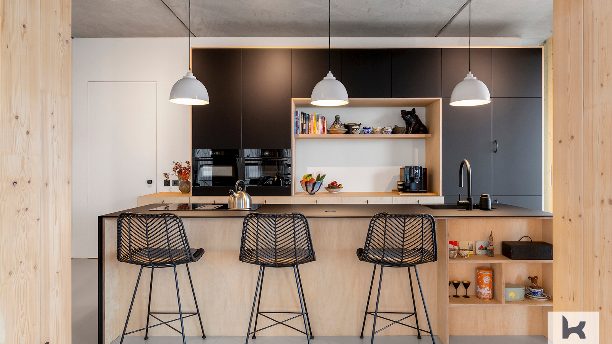
Je IKEA-kasten blijven. De buitenkant maken wij.
Onze fronten en deuren hebben exact dezelfde maten en boorgaten als die van IKEA. Je koopt de kasten bij IKEA, de fronten bij ons. Zo krijg je een keuken die eruitziet als maatwerk, op een betaalbaar en betrouwbaar systeem.
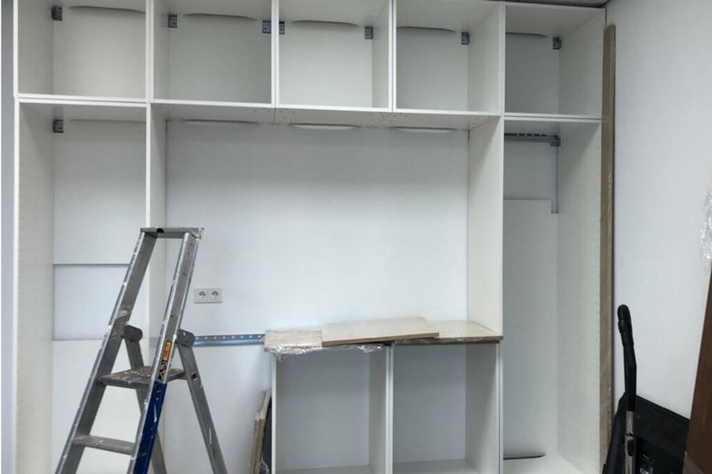
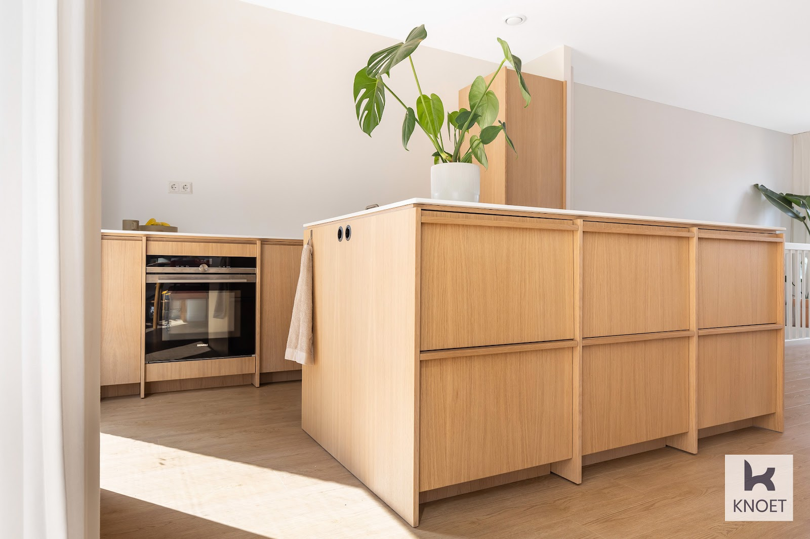
Zo werkt het
Vier stappen, en je hoeft het niet alleen uit te zoeken. Wij denken mee over meer dan alleen de fronten.
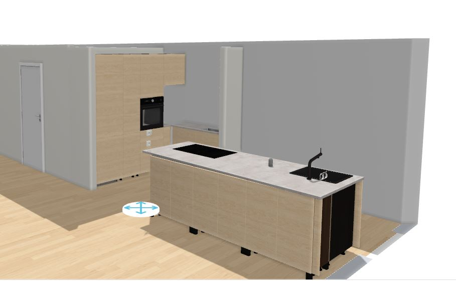
-
1
Maak je ontwerp bij IKEA
Ontwerp je keuken in de IKEA keukenplanner, of maak een afspraak bij IKEA om hem samen te stellen.
-
2
Binnen 48 uur een offerte
Stuur ons het IKEA-ontwerp en je krijgt binnen 48 uur een duidelijke offerte.
Ontwerp mailen -
3
Voel de stalen thuis
Is de offerte naar wens, dan ontvang je een samplepakket met alle opties. Zo kies je met daglicht in je eigen huis.
Samples bestellen -
4
Samen elk front doorlopen
Online of in de showroom in Wehl bespreken we het hele keukenontwerp. Daarna leveren we binnen 6 tot 8 weken.
Afspraak inplannen
Kies je materiaal, je kleur en je greep
Van echt houtfineer tot zijdezacht Fenix. Hieronder een greep uit de kleuren. Op een scherm is kleur altijd een indicatie, daarom sturen we je graag de echte stalen.
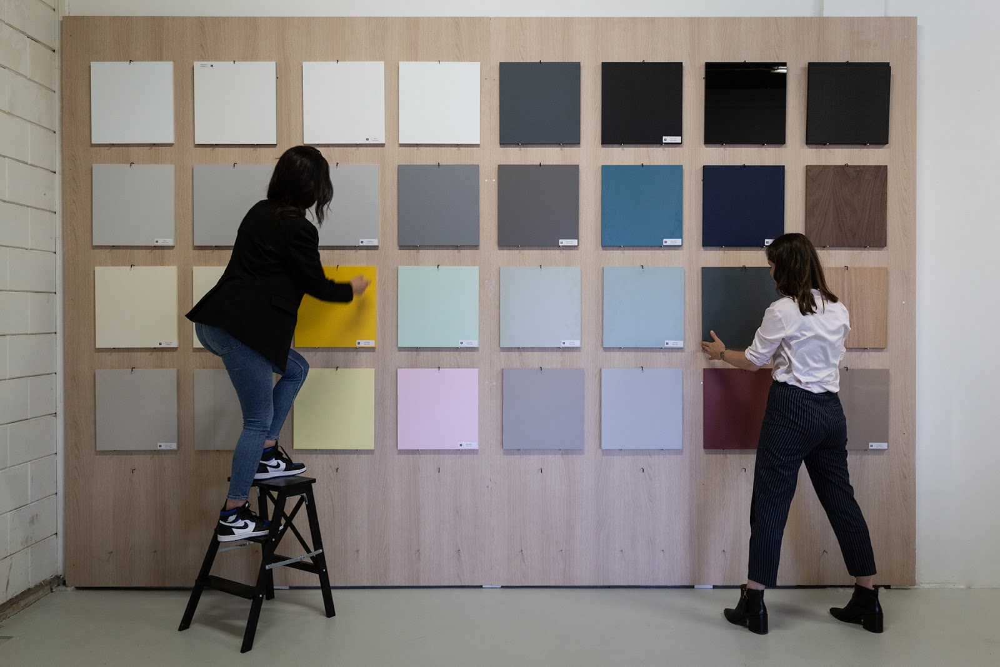
Fineer hout
toplaag van echt hout- Light oak
- Mid brown oak
- Dark brown oak
- Black oak
- American walnut
- Dark walnut
Arpa Fenix
vingerafdrukvrij, zijdezacht- Bianco Kos
- Beige Arizona
- Castoro Ottawa
- Verde Comodoro
- Blu Fes
- Nero Ingo
Voor, achter en aan de zijkanten bekleed met Fenix. Krassen poets je weg met warmte, en het is makkelijk schoon te houden.
Extreem mat
vijf kleuren- Snow White
- Linen Beige
- Stone Grey
- Denim Blue
- Spider Black
De greep
bij fineer hout- Japandi greep
- Komgreep
- Rechte afwerking
Liever hoogglans? Snow White is er ook in hoogglans.
Alle fronten zijn er voor IKEA Metod en Faktum.
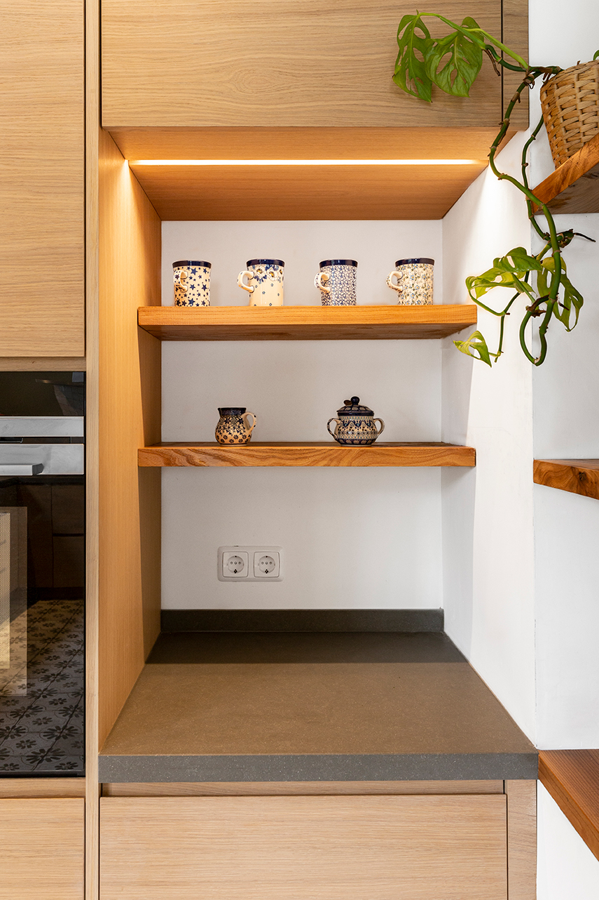
Past het net niet? Dan zagen we het op maat.
We zagen alles zelf op maat. Daardoor kunnen we meer dan de standaard IKEA-maten.
- Losse fronten
- Fronten voor kasten en lades zijn ook los te koop, met dezelfde maten en boorgaten als IKEA.
- Deuren op maat
- Een deurtje langer of hoger dan standaard? Dat maken we.
- Zijpanelen
- Zij- en bedekkingspanelen in dezelfde kleur en hetzelfde materiaal als je fronten, ook op maat.
Keukens die we afmaakten
Allemaal IKEA-kasten van binnen. Van buiten niet te zien.
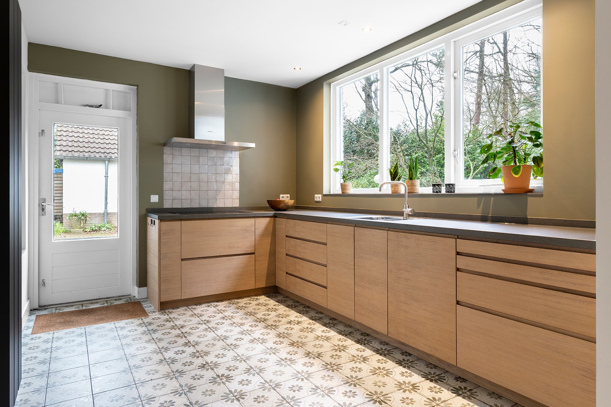
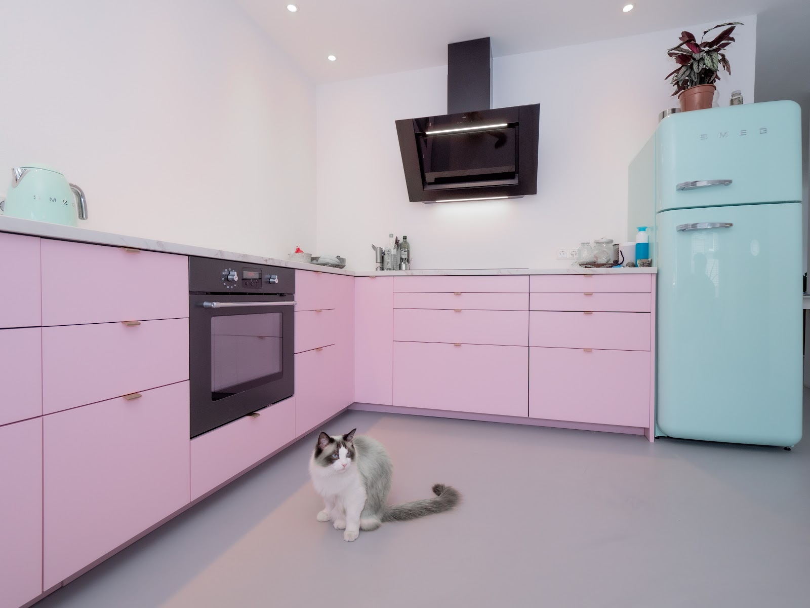
-
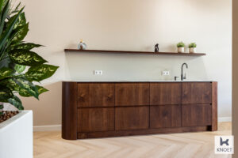
Dark walnut met komgreep
-
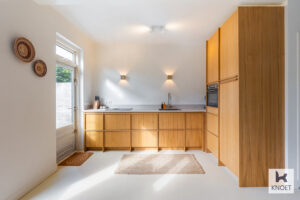
Japandi greep light oak
-
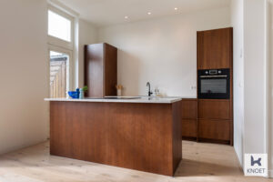
Mid Brown Oak met Japandi greep
-
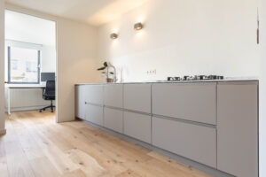
Arpa Fenix 0717 Castoro Ottawa
-
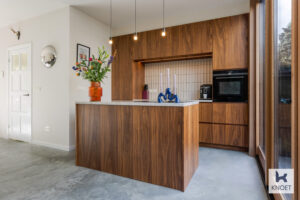
Fineer American Walnut met komgrepen
-
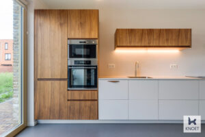
American Walnut en Linen Beige mat
"Van begin tot eind werd er super fijn meegedacht."
4,6 uit 31 Google-reviews
Super service en hele mooie fronten! Wij hebben gekozen voor de mid brown oak keukenfronten voor onze Metod kastjes van Ikea. Van begin tot eind werd er super fijn meegedacht, waardoor de keuken helemaal naar onze smaak is! Erg klantvriendelijk en makkelijk bereikbaar voor vragen. Kortom: een echte aanrader! :)
Wij zijn heel blij met de service en kwaliteit van de fronten van Knoet! Wij hebben al aardig wat huizen verbouwd en dit was onze vierde keuken, maar nog hadden we heel veel aan de tips die Silke ons heeft gegeven. O.a. over een aparte koffiehoek, we zijn hier nog elke dag heel blij mee! De fronten zelf zijn echt stuk…
Ik raad Knoet Keukenfronten aan als je op zoek bent naar frontjes op een Ikea keuken:
- Aan de hand van een model programma maakt Knoet een 3D-schets van de keuken, zodat je een goed idee krijgt hoe deze eruit komt te zien.
- Er wordt goed meegedacht met de mogelijkheden in de keuken, meer dan alleen de frontjes. Bijv…
Mooi resultaat!
Knoet keukenfronten hebben een heel mooi product afgeleverd. Na een online meeting met een medewerker hebben we elk front uitvoerig besproken. De fineerrichting, draairichting en afmetingen werden tot in detail bekeken. De levering verliep ook heel vlot. Het is wel een erg grote kist maar gelukkig was e…
We bevelen Knoet van harte aan voor wie op zoek is naar prachtige keukenfrontjes en een uitstekende service. Het contact met Silke verliep vanaf het eerste moment heel goed, ze nam duidelijk de tijd voor ons, zelfs in het weekend was ze beschikbaar. Ze dacht ook het hele proces mee: van het bestellen van de keuken bij…
De mooiste IKEA-keukens nog mooier maken.
Dat doen we elke dag, met veel passie. Vanuit Wehl helpen we je van eerste ontwerp tot de kist met fronten bij je voor de deur. Langs komen in de showroom kan, graag even op afspraak. Dan hebben we alle tijd voor je.
Afspraak maken voor de showroom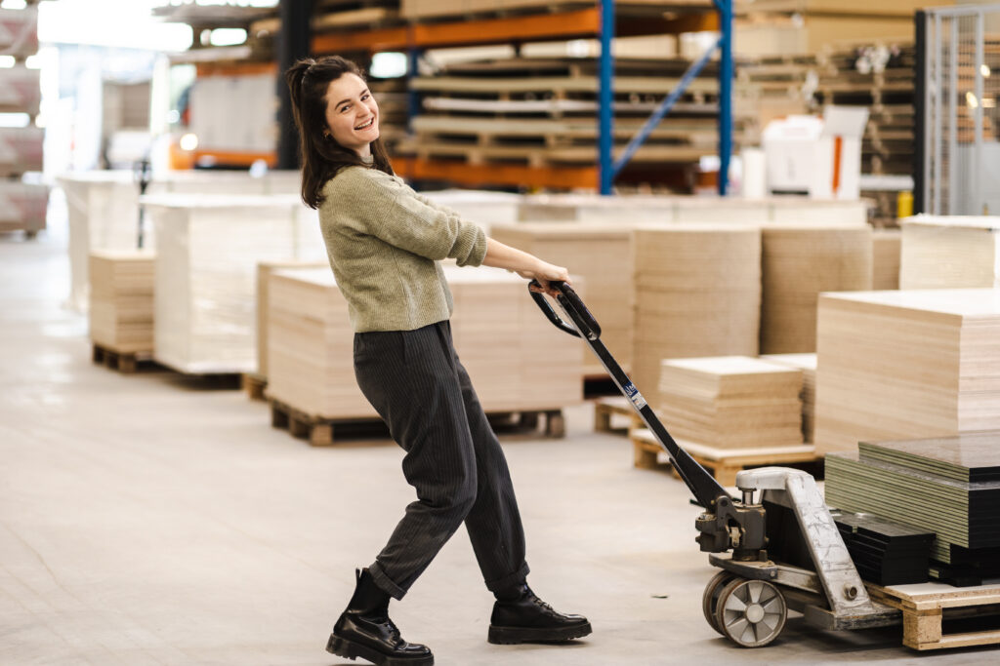
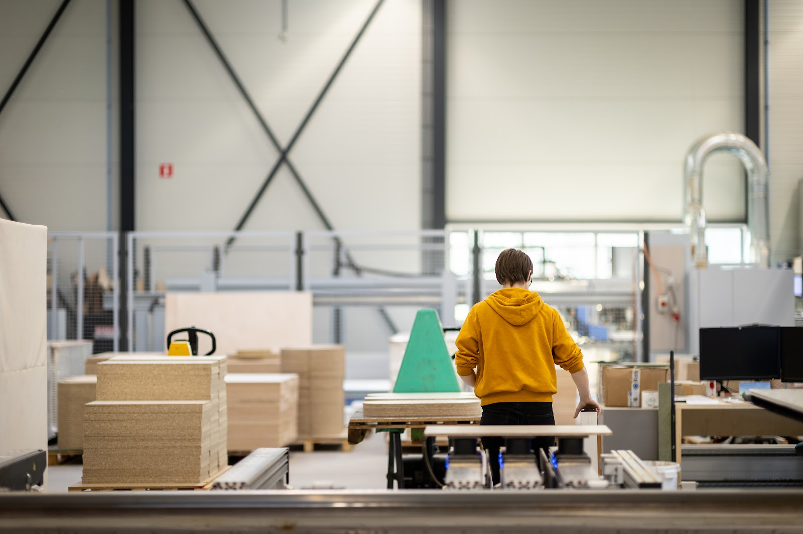
Stuur je ontwerp, binnen 48 uur heb je een offerte.
Bellen
026 200 5102Mailen
info@keukenfronten.comShowroom (op afspraak)
Radonstraat 4, 7031 GT Wehl
| Maandag t/m donderdag | 09:00 tot 17:00 |
| Vrijdag | 09:30 tot 17:00 |
| Zaterdag en zondag | gesloten |